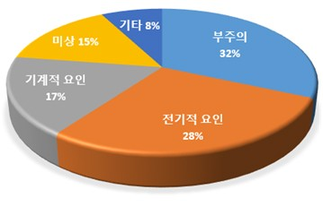
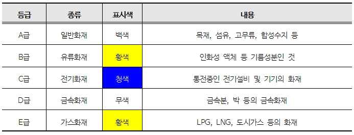
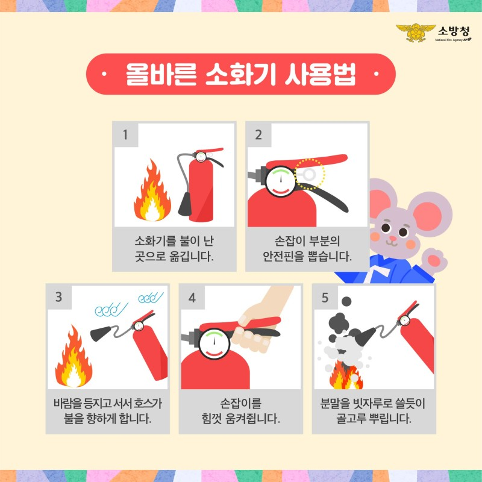

화 재
화재(火災)의 의미
인간이 의도하지 않은, 또는 고의로 불을 낸 것을 의미하며, 소화시설을 이용해 끌 필요가 있는 화학적인 폭발현상이다.
화재 발생의 원인
화재의 발생 원인으로는 크게 실화(失火)와 방화(放火)로 나뉜다. 실화의 경우는 사람의 부주의나 실수 또는 관리 소홀로 말미암아 발생하는 화재를 말하고, 고의성이 전혀 없는 상태에서 발생하는 화재를 말한다. 반면에 방화의 경우는 사람이 고의로 불을 질러 건조물이나 기타 물건을 불태워버리는 행위 또는 그 자체의 화재를 말한다.

-
불의 3요소
-
가연물
가연물이란 연소하기 쉬운 물질로 발화의 원인으로 볼 수 있는데 일상에서 주로 쓰는 연료를 생각하면 이해가 쉽게 되며 가연물은 고체류, 액체류, 기체류로 나눌 수 있다.
- 고체류: 나무, 종이, 섬유 외
- 액체류: 인화성 기름인 휘발유, 경유, 등유와 알코올 등
- 기체류: 수소, LPG, 프로판 가스 등으로 폭발성을 가지기 때문에 더욱 조심해야 한다.
-
산소
산소는 일반적으로 공기중에 21% 가량 함유되어 있고 발화에 필요한 산소량은 약 16%이므로 공기 중에 포함된 산소와 반응하는 것이 대부분이지만, 예외적으로 산소를 포함하고 있는 물질에 산소가 반응할 수도 있다.
-
점화원
점화원이란 화재에 필요한 에너지원을 말하며 전기불꽃, 정전기, 마찰 및 충격 등에 의한 불꽃이나 발열, 그리고 자연적 발화의 원인이 되는 산화열 등도 여기에 포함된다.
-
가연물
-
화재의 원인 통계
최근 5년간 화재의 원인 중 가장 많은 부분을 차지하는 것은 사용자 부주의로 인한 화재로 30% 이상을 차지하고 있다. 특히 부주의 화재 가운데 '담배꽁초'는 22.5%(1995건)로 가장 높은 비율로 조사됐으며, '용접&절단' 20.5%(1812건), '불씨방치' 17.8%(1575건), '쓰레기 소각' 14.4%(1272건) 등이 있다.
화재의 종류

- 일반화재(A형): 나무, 종이 등 일반적인 가연성 물체에 불이 붙어 화재가 난 상태.
- 유류 화재(B형): 가연성 물질에 불이 붙은 상태를 B형 화재로 분류한다. 주로 주유소 화재, 주방 화재, 차량/항공기/선박 등의 연료 폭발로 인한 화재가 있다.
- 전기 화재(C형): 누전 ,합선 등으로 피복재 등에 불이 붙은 경우 전기 화재로 분류한다.
- 금속 화재(D형): 리튬, 나트륨, 칼슘, 세슘, 마그네슘과 같은 반응성이 높은 알칼리 금속 혹은 알칼리 토금속으로 인한 화재.
- 가스 화재(E형): 가연성 액체 또는 고체의 표면에서 발생하는 석유화재나 건물화재를 비롯해 도시가스 배관이나 저장도에서 가스가 누출되어 타는 것을 말한다.
- 주방 화재(K형): 주방에서 동/식물유를 취급하는 조리기구에서 발생되는 화재로 유류화재와 유사한 연소의 특성을 가지는 화재이다.
장소별 대응법
-
지하철
[역사 내 화재 대피]
화재경보) 역사 내 화재용 비상벨(발신기) 버튼을 눌러 모든 사람에게 화재 사실을 알린다.
긴급연락) 승강장의 비상통화장치 및 벽 등에 부착된 긴급연락 전화번호를 사용하여 역무원에게 알리고 소방서(199)로 신고한다.
초기진압) 초기화재 시 역사 내에 배치된 소화기와 소화전을 사용하여 불을 끈다.
대피요령) 역무원 및 소방관 등의 안내에 따라 질서 있게 신속히 대피한다.
[열차 내 화재 대피]
1. 객실 끝에 위치한 비상통화장치로 승무원과 통화한다.
2. 차장 또는 기관사에게 화재사실을 통보한다.
3. 국번 없이 119에 화재를 신고한다.
4. 객실 양끝에 비치된 분말소화기를 꺼내 안전핀을 뽑은 후
5. 소화약재를 화재가 발생한 곳에 뿌려 신속히 진화한다.
6. 승무원의 안내에 따라 좌석 양 옆 하부(구형) 또는 상부(신형)에 위치한 비상코크를 사용하여 출입문을 양쪽으로 열어 개방한 후 탈출한다.
7.선로에 내릴 땐 다른 열차가 오는지 주의하여야 한다.
-
아파트
1. 우선 가족과 이웃에게 알리고 119로 신속하게 신고한다.
2. 이후 신속하게 대피한다.
3. 대피공간 피난 후 창문으로 구조요청을 하거나, 완강기를 이용해 피난한다. (대피공간은 화재 연기로부터 60분 이상 보호해 준다.)
4. 전원차단에 대비해 휴대용 비상조명 등을 준비한다.
5. 대피공간인 경량칸막이 주위에 물건을 적치하면 안된다.
6. 창문 개방이 어려운 경우 연기를 막을 수 있는 밀폐된 작은 방으로 대피한다.
7. 소화기 등을 이용하여 초기소화에 힘쓴다.
8. 엘리베이터는 이용하지 않는다.
9. 방화문은 꼭 닫는다.
-
지하상가
1. 방향 감각을 상실할 수 있으니 침착하고, 혼란에 휩쓸리지 않도록 한다.
2. 대부분 양방향과 측면에 비상구가 있으니 우왕좌왕하지 말고 한 방향을 택해 대피합니다.
3. 정전 시에는 대피유도 등을, 유도등이 없을 경우에는 벽을 짚거나 시각장애인 안내용 보도블록을 따라 이동한다.
4. 화재가 발생한 반대쪽, 공기가 유입되는 방향으로 대피한다.
5. 연기와 열기가 급속히 확산될 수 있으니 재빨리 대피한다.
소화기 사용법

1. 소화기를 불이 난 곳으로 옮긴다.
2. 손잡이 부분의 안전핀을 뽑는다.
3. 바람을 등지고 서서 호스가 불을 향하게 한다.
4. 손잡이를 힘껏 움켜진다.
5. 분말을 빗자루로 쓸듯이 골고루 뿌린다.
아파트
- 이웃으로 통하는 발코니 비상문 또는 비상 칸막이 벽이 있는지 확인하고, 통행을 막지 않도록 기구를 놓지 않는다.
- 피난계단이 연기에 오염되는 경우를 대비하여 연기를 피해 공기를 마실 수 있는 발코니 창문을 염두에 둔다.
- 발코니를 확장하여 창문의 개방이 어려운 주상복합 고층아파트에서는 현관문을 통하여 연기의 확산이 예상되므로 연기 침투를 막을 수 있는 안전구역(밀폐 가능한 작은방 등)이 필요하다.
주택
- 자택에 불필요한 가연물(헌 옷, 신문폐지, 폐 박스)을 싸놓지 말기.
- 인화성 액체(알코올, 휘발유 등)나 인화성 기체(부탄가스)를 함부로 놓지 말기.
- 카펫의 밑면이나 장롱 뒤편 등의 보이지 않는 곳에 전선을 늘여뜨리지 말기.
- 어린이의 손이 닿거나 쉽게 사용 가능한 곳에 라이터나 성냥갑을 두지 않기.
- 가스불 위에 요리를 올려놓고, 내버려둔 채 주방을 장시간 비우지 않기.
- 집에서는 담배를 피우지 않기. 담배를 피운다면 담배를 피우다 깜박 졸 수 있는 침대나 이불 주위에는 피우지 말고, 될 수 있으면 큰 재떨이를 사용하기.
- 전열기구 사용시에는 하나의 콘센트에 여러 개의 전기기구 플러그를 접속시켜 사용하지 않도록 하기.
- 가정에 적합한 소화기를 비치하고 그 사용법을 익혀두기.
차량
- 냉각수를 자주 점검하고 보충한다.
- 경고등과 온도 게이지를 유심히 살피도록 한다.
- 오래된 차량일수록 주기적인 점검을 받도록 한다.
- 차량의 배선, 연료, 점화 장치를 수시로 점검한다.
- 차내에 라이터나 성냥을 방치하지 않도록 한다.
- 주행 중 차내에서 흡연을 삼가고 담배꽁초를 밖으로 버리지 않도록 한다.
- 차량에 소화기를 비치해 놓도록 한다.